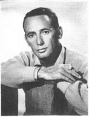

Joey Bishop
1918-Comedian, actor, born Joesph Abraham Gottlieb, on February 3, 1918, in the Bronx, New York.
Bishop grew up in South Philadelphia. After high school, he enjoyed a modest career as a stand-up comic prior to serving in the Army in World War II. In 1941 Bishop married Sylvia Ruzga. They have one son, Larry.
In the 1950s, he started a friendship with Frank Sinatra, which resulted in Bishop's inclusion in the "Rat Pack," a group of entertainers consisting of Sinatra, Bishop, Dean Martin, Sammy Davis, Jr., and Peter Lawford. Although Bishop's celebrity profile is far lower than that of Sinatra, Davis or Martin, Sinatra called Bishop "the Hub of the Big Wheel," citing him as the originator of most of the group's comic material and the one who anchored their stage presence. He and Dean Martin were also said to be the only members who could tell jokes at Sinatra's expense. Bishop performed with the Rat Pack in Las Vegas and co-starred with them in the films Oceans Eleven (1960) and Sergeants Three (1962).
Bishop gained wide exposure by appearing regularly on Jack Paar's Tonight Show (1958-62). He starred in The Joey Bishop Show (1961-65), a television sitcom, and hosted his own talk show, also called The Joey Bishop Show, in 1967.
His other film appearances include The Naked and the Dead (1958) Pepe (1960), Johnny Cool (1963), A Guide for the Married Man (1967) The Valley of the Dolls (1967), Betsy's Wedding (1990), and Mad Dog Time (1996), which was directed by Bishop's son Larry.